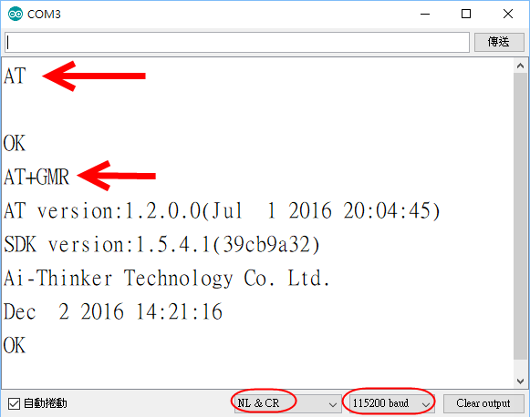

Tools and Firmware (with AT Command Manual) (解壓縮到磁碟根目錄下)

燒入 Firmware: ESP8266_DIO_8Mbit_V1.5.4.1_20161202.bin.zip
AT Command 1.54 Manual-CN.pdf
AT Command 1.54 Manual-EN.pdf
燒錄完成後 GPIO0浮接 即可進入AT COMMAND MODE (BAUD: 115200)
AT: OK
AT+RST : 可觀察FLASH狀態



適用ESP01S